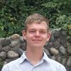
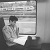
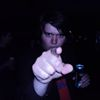

Ploeg
- Bar
- Beheer
- Cantus
- CuDi
- Cultuur
- EJW
- GAK
- Internationaal
- Materiaal
- Media
- PR
- Redactie
- Secretaris
- Sport
- Webteam
Preses
Ergens halverwege het middelbaar begon ik stilaan de dagen af te tellen naar de universiteit. Wat het me precies zou brengen kon ik op dat moment nog niet geweldig goed inschatten, maar de vrijheid, het studeren van een richting die me echt interesseerde en het meest van al nog het samenzijn met studenten die op dezelfde golflengte zaten: hoe kon het anders dan dat mijn studententijd de beste van mijn leven zou worden? Een jammerlijke vergissing betreffende de keuze van mijn richting zorgde echter dat dromen bij dromen bleef en gedurende mijn eerste maanden werd die illussie meer en meer doorprikt. Het was veel minder vanzelfsprekend dan ik had durven hopen om de zeëen aan tijd op een leuke manier door te brengen en het gevoel te krijgen dat ik een nieuwe thuis gevonden had.
Een avond die ik waarschijnlijk nooit zal vergeten is de openingsbar van de campagne Focus: de faute bar. Ik studeerde sinds een goede maand Informatica en veel buitenkomen was er dat semester nog niet gebeurd. Meer omdat ik zijn gezaag beu was dan omdat ik echt zin had, liet ik Anton mij overtuigen om naar de Winabar te komen. Ik had het toen niet verwacht, maar daar ben ik hem nog altijd dankbaar voor. Die avond was een sprookje voor mij: Fanne, die nu opkomt als mijn vice, sloeg een prachtige eerste indruk in het prachtige kleedje dat hij aan had, ik leerde meer dan de helft van het presidium kennen op één avond en ik zag de zon opkomen met mensen die ik nog nooit eerder ontmoet had. Op het moment dat ik het het minste verwachtte en bij mensen die ik eigenlijk niet kende, daar voelde ik me voor het eerst op mijn plaats in Leuven. En hoe meer ik in aanraking kwam met alles waar Wina voor staat, hoe meer het mijn thuis werd.
Mijn eerdere enthousiasme voor het studentenleven was in een vingerknip herwonnen en al gauw kwam er de behoefte om mee deel uit te maken van de organisatie die zoveel voor mij veranderd had. Ik was best ongeduldig om in het presidium te gaan en in september werd ik gecoöpteerd in het cultuurteam van Focus. Het eerste semester vloog voorbij en voor ik het wist was ik secretaresse bij Span en zat ik op kot op Winagang. Hoe drukker ik het kreeg met Wina, hoe meer ik genoot van mijn studentenleven en dat is deels mijn motivatie geweest om er dit jaar nog een schepje bovenop te doen als preses. Ik kan niet echt verwoorden hoe zeer ik er naar uit kijk om volgend jaar nog meer bezig te kunnen zijn met Wina.
De voorbereidingen voor de campagne zijn al redelijk gevorderd als ik dit schrijf en het begint steeds meer tot me door te dringen wat een voorrecht het is om zo'n geweldige ploeg te mogen leiden. Het belooft een fantastische campagne te worden met al het harde werk dat iedereen verzet heeft en ik kijk er enorm naar uit. Spectrum is een topploeg en ik heb er ontzettend veel zin in!
Carolyne

Vicepreses
In tegenstelling tot bij vele is EJWiekent niet de eerste keer dat ik in contact gekomen ben met Wina. Ik heb het genoegen gehad om een jaar voor dat ik ging studeren al kennis te maken met een aantal leuke Winezen. Om een of andere louche reden had Jels, mijn broer die toen al in het presidium zat, een gratis vat gewonnen dat we in het verre Wallonië moeten gaan opdrinken. Hij had natuurlijk een hoop presidiumvrienden meegenomen. En mij. Nadat mij het geweldige concept van Tour de France was uitgelegd ben ik leutig beginnen koersen op café ( ik ging voor de groene trui, domme nog-niet-eens-schacht die ik was). Na een groot aantal pinten werd het Winalied ingezet. Ik weet niet waarom maar ik stond vol verbazing te luisteren naar de samenzang van al die Winezen. Van dat moment heb ik een jaar lang uitgekeken naar EJWiekent, de tweede keer dat ik dat befaamde Winalied zou mogen aanhoren.
Na EJWiekent heb ik er nooit nog aan getwijfeld dat ik een grote rol wou spelen in het presidium van Wina. Net zoals ik er nooit aan getwijfeld heb dat Wina een grote rol zou spelen in mijn leven. Zeker nadat ik in mijn eerste presidiumjaar al op de Winagang terecht gekomen ben heeft dat de vlam nog meer doen aanwakkeren. Leven op de gang heeft me nog meer gebonden met het Winaleven. Hierdoor ben ik ook veel gemakkelijker in Beheer gerold bij , waarmee je toch met elke post in contact komt. Dat vind ik een van de leukere dingen aan Beheer en dat gaat met Vice-preses nog meer zijn. Ik zie mezelf rond gaan bij elke activiteitverantwoordelijke en eens een leuke babbel doen of een ganggolfje om te horen hoe de voorbereidingen vlotten. Zoals Carolyne het gezicht gaat zijn van Wina naar de buitenwereld en andere kringen toe, zo wil ik vooral het gezicht en aanspreekpunt zijn van Spectrum zelf. Wij zijn al bijeen gemotiveerde Spectralen ondereen!
Fanne
Bar
Ook volgend jaar plant het barteam van Spectrum om van de wekelijkse winabar het beste feestje van Leuven te maken. Om dit te verwezenlijken zullen de nieuwe barhelden ook volgend jaar elke woensdag bier tappen voor de vertrouwde prijs van 1 euro. Het nieuwe Spectrum barteam zal hierbij ook de gewoonlijke wina-muziek draaien in playlists van de hoogste kwaliteit!
Verantwoordelijken: Arno & Aderik
Medewerkers: Albert, Arne, Milko, Nicky, Robin, Samuel & Siebe
Beheer
Wij, Aiko en Alexander, zullen beheer doen bij Spectrum. Dankzij de combinatie van Alexanders ervaring en de jeugdige motivatie van Aiko, geloven we dat we erin zullen slagen om volgend jaar even goed te draaien als vorige jaren. Wij zullen ervoor zorgen dat kassa’s geteld worden, subsidies aangevraagd worden en begrotingen op punt staan. Daarnaast zullen we ook de facturen op tijd betalen en zorgen voor kleurrijke exploitaties.
Verantwoordelijken: Aiko & Alexander
Cantus
Beste vrienden van het studentenlied: verenigt u allen, want wij bij Spectrum zijn helemaal klaar om het volgende jaar spetterende cantussen te organiseren. Wie zijn wij?
Siebe Driesen: Bij de meesten bekend als de sympathieke Wina barman, zowel voor als achter de toog is het met hem altijd feest. Hij wil zich volgend jaar ontfermen over de nieuwe lading schachten en hen opleiden tot ware leden van onze geliefde kring.
Lien Bosmans: Twee jaar geleden een der koninklijke schachten en nooit te missen op een Wina-cantus. Gezellig, creatief en een tikkeltje gek; dé perfecte combinatie voor een opkomende zedenmeester. Weet jij haar straffen te ontwijken, of vlieg je recht in de kan? Alleen de tijd zal het ons leren.
Sander Belmans: Voor de meesten onder jullie beter bekend als ‘Den Belmans’, of als ‘die mens die altijd wat zat ligt te wezen aan die schachtentafel’. Hij wil volgend jaar zijn beste beentje voorzetten om formidabele cantussen te organiseren en er een spetterend jaar van te maken.
Wat vinden wij belangrijk? De kwaliteit van onze geliefde Wina-cantussen behouden en dikke vette sfeer!
Sander (senior), Lien (zedenmeester) & Siebe (schachtenmeester)
CuDi
Wie zich zo nu en dan nog eens aan de onheilspellende tocht naar gebouw L van campus Arenberg III waagt, wordt er haast naartoe gezogen als ware het een zwart gat van wel 10 zonsmassa’s: lokaal 00.03! Bij gewervelde organismen beter bekend als de Scientica Cursusdienst.
Met het doorkruisen van ons legendarisch grijze toegangsportaal, betreed je als het ware een oase van kennis, verrukking en verhevenheid, maar bovenal van kladpapier, plastieken zakskes, dissectiesetjes, 3D-brilletjes, labojassen en nog veel meer… Bijna te mooi voor woorden maar toch niet minder waar: dit alles aan zeer democratische prijzen zodat er nog genoeg centjes overblijven om jullie honger te stillen, keeltjes te smeren en avonden vol plezier te beleven...
Ook dit jaar gaan de geselecteerde tributen uit de 5 districten van het grote Scienticarijk, voortaan aangesproken als “Krivers”, weer hun uiterste best doen om al jullie favoriete proffen de contacteren en jullie op de hoogte te houden van alle nieuwigheidjes binnen CuDi!
Dan zijn er ook nog de onmisbare medewerkers, die jullie met een hartverwarmende glimlach verwelkomen en al jullie cursusmateriaal op een zilveren plateau (of in een plastieken zakske als de plateaus op zijn) hoffelijk serveren. En last but not least: maak tevens weer kennis met die onversaagde krijgsmannen van webteam, die er keer op keer weer voor zorgen dat jullie in alle comfort op een consciëntieus geconstrueerde cudisite boeken kunnen cachen (a.k.a. reserveren).
Wij allen zijn er klaar voor en hebben er zin in! Zonnige groetjes en tot in den draai!
Verantwoordelijken: Anthe & Laurens
Medewerkers: Aderik, Lien, Lise, Ruben, Wieter & Yanice

Cultuur
Wat is cultuur? Voor ons is er geen sluitend antwoord op deze vraag. Het hangt af van persoon tot persoon. Enkele van onze antwoorden zijn:
Marike: "Cultuur onderscheidt ons en brengt ons samen."
Karim: "Cultuur is de architect van de maatschappij."
Stephanie: "Cultuur draait voor mij rond ervaringen - zowel klein als groot, ontroerend als grappig, intens als luchtig -, die steeds weer voor verrassingen zorgen en ons de wereld telkens op een andere manier doen bekijken."
Nicky: "Cultuur is voor mij samenkomen, samen ontdekken en vooral samen beleven."
Gitte: "Één van de activiteiten waar ik het meest naar uitkijk, is de cultuurreis. Een week met een toffe groep een stad gaan verkennen en plezier maken."
Anthe: "Cultuur is voor mij ontspanning en tegelijkertijd kennis opdoen. Het brengt mensen bij elkaar met dezelfde interesses en dat maakt het zo mooi."
Tine: "Ook atypisch cultuur is cultuur."
Simme: "Cultuur is het verleggen van grenzen."
Wat willen we bereiken met cultuur? Dat iedereen die heeft meegedaan aan een of meerdere cultuuractiviteiten volgend jaar cultuur ook kan omschrijven met een positief, maar zeker ook persoonlijk gevoel. Cultuur is wat je zelf van cultuur wil maken!
Verantwoordelijken: Simme & Tine
Medewerkers: Anthe, Gitte, Karim, Marike, Nicky & Stephanie
EJW
Voor eerstejaars is beginnen aan de universiteit niet altijd een makkie. Daarom is een eerstejaarswerking binnen een presidium zeer belangrijk. EJW is immers de brug tussen eerstejaars en wina, wat een rol is die wij met ons achten zeer graag op zouden nemen en verder uitbouwen.
Enerzijds willen wij zeker de sterke fundering waarop het huidig EJW gebouwd is, behouden. Activiteiten waar wij zelf met veel plezier aan deelgenomen hebben, zoals spelletjesavonden, verken Leuven en natuurlijk EJWiekent komen zeker op onze agenda! Dankzij deze activiteiten leerden wij veel winezen kennen en werd alles al snel heel vertrouwd.
Natuurlijk willen wij ook ons eigen steentje bijdragen aan EJW. Dit octagoon is een heel diverse bende, wij zitten bijvoorbeeld nog in heel wat andere posten, wat wij als een absoluut voordeel zien. Het lijkt ons een sterk punt te werken aan een samenwerking vanuit EJW met andere posten. Bijvoorbeeld een toneelbezoek samen met cultuur of een avondspel samen met sport.
Al bij al willen wij de eerstejaars kennis laten maken met de fantastische stad die Leuven is, de geweldige richtingen fysica, informatica en wiskunde zijn en vooral, wat een legendarische studentenvereniging Wina is!
Verantwoordelijke: Lisa
Medewerkers: Aaron, Arne, Karim, Marike, Milko, Simme & Stephanie
GAK
Zoals elk jaar staat er weer een gemotiveerd GAK-team klaar om jullie volgend jaar te laten genieten van alles wat deze geweldige post jullie te bieden heeft. Na het grote succes van de laatste LAN-party die Wina met VTK en LBK heeft georganiseerd, willen we dit graag nog eens herhalen. Onder het motto: “Hoe meer zielen hoe meer vreugd.” zullen we hen graag weer uitnodigen om met ons te komen gamen. Ook de verschillende lezingen van professoren zijn in de smaak gevallen. Dit is dus zeker iets waar we als GAK-team van Spectrum volledig achter staan. Verder doen we gewoon waar we goed in zijn, namelijk barbecue, kerstfeestje, eetstandjes en zo veel meer organiseren. Groot of klein, met GAK is elke activiteit fijn!
Verantwoordelijke: Sander
Medewerkers: Art, Bart, Dries, Marnik, Nele, Samuel & Wieter
Internationaal
Ook volgend jaar zullen er weer een hoop internationale studenten een richting opnemen binnen Wina. Wij zullen ook weer met open armen klaar staan om hen te verwelkomen. Het internationaal team wordt ieder jaar groter en groter. Dit betekent dat wij met Scientica meer en meer activiteiten kunnen doen. We organiseren dit jaar dus ook weer potluck dinners, cantussen, pub evenings en citytrips om hen te leren kennismaken met de verschillende kanten van het Leuvense uitgaansleven. Ook blijven we hen verwelkomen op verschillende activiteiten binnen Wina, zoals de winabar en LAN-parties.
Verantwoordelijke: Mariska
Medewerkers: Kristien, Marike, Reinout, Rik, Simon, Thibault, Tijl, Valentijn & Wies
 
Materiaal
De Kelder en de Living zijn ware begrippen binnen Wina. Maar wie is daar nu eigelijk verantwoordelijk voor? De stille helden van Materiaal natuurlijk. (of ...begrippen binnen Wina. Deze worden met de grootste trots in stand gehouden door de stille helden van Materiaal) Wij zorgen er namelijk altijd voor dat de Living verhuurd kan worden, dat deze er netjes bij ligt en dat er altijd een bak bier in de buurt is! Daarnaast verhuren wij verhuren ook allerhande materiaal (you don't say)! Willen jullie bijvoorbeeld eens een barbecue huren, of de beamer voor een filmavond? Wel dan is er maar een adres: materiaal@wina.be.
PS: Wisten jullie dat het geen toeval is dat Materiaal rijmt op Geniaal?
Verantwoordelijke: Denis
Medewerkers: Aderik, Arno, Jari, Reinout & Ruben

Media
Media, een post met vele facetten en vanaf volgend jaar ook vele gezichten. Een groep die meer doet dan enkel camerawerpen. Een groep die gemotiveerd is om er een geweldig jaar van te maken. Omdat we met meer man zijn zal het gemakkelijker worden echt overal foto’s te maken. We willen de mooie momenten die je beleeft op onze activiteiten vastleggen, zodat iedereen nog eens kan nagenieten en hun goeie herinneringen nooit verloren zullen gaan.
Een tweede taak is reclame maken: hoe weet je immers anders wanneer welke activiteit wanneer zal plaatsvinden? Samen met redactie zullen we ervoor zorgen dat de propaganda machine volgend jaar nog altijd op volle toeren zal draaien en, waar het kan, geperfectioneerd worden. Kalenders, social media en de website zijn de tools die we hiervoor willen gebruiken. Tot slot willen we de winezen niet in de kou laten staan door hun t-shirts en truien te bezorgen, zodat zij gedurende het hele jaar met trots de kleren van hun favoriete studentenvereniging of departement kunnen dragen.
Zie jullie aan de andere kant van de camera!
Verantwoordelijke: Jari
Medewerkers: Denis, Joke, Karim, Nele, Thibault, Tijl & Yana
PR
Die zotte acties op de Winabar, Bicky's aan 80 cent op de 24 urenloop... hoe krijgt Wina dat voor elkaar? Het is de post PR die voor de centjes zorgt en ook volgend jaar willen wij ons hier ten volle voor inzetten. Hou je dus vast voor een nieuw jaar waarin wij onze leden goed zullen verwennen. Maar PR is meer dan gratis vaten geven. Wij willen er ook voor zorgen dat de Winezen klaar zijn voor het leven na de universiteit. Zo organiseren wij in samenwerking met Scientica een jobfair, waar jullie je droomjob zullen tegenkomen. Voor degenen die nog een beter oog willen krijgen op het bedrijfsleven, organiseren we tijdens het jaar enkele bedrijfslezingen, waar jullie nieuwe inzichten kunnen kweken.
Wij hebben er alvast zin in!
Verantwoordelijke: Andreas
Medewerkers: Aaron, Jari & Reinout
Redactie
Er staat alweer een enthousiast team klaar om, met de pen in de aanslag, jou wekelijks een prachtige winagenda te bezorgen. Net zoals vorig jaar, zullen we onze uiterste best doen om je niet enkel op de hoogte te houden van Wina's activiteiten, maar ook te vermaken met andere geschreven dingen. Verwacht je dus aan interviews, sportuitslagen, columns, en andere hersenspinsels van dit opkomend redactieteam. De Winagenda betekent echter niet enkel leesvoer, ze is ook elke week opnieuw een bron van puzzels. Opdat ook de puzzelaars aan hun trekken zullen komen, organiseren we een heus puzzelklassement met elke week een eervolle vermelding voor degene die als snelste de slitherlink oplost. Maar daar stopt het niet bij! Je zal wekelijks punten kunnen sprokkelen om tot puzzelkoning(in) van Wina gekroond te worden! Wij zijn alvast benieuwd naar de winnaar en hebben er ontzettend veel zin in!
Verantwoordelijke: Lien
Medewerkers: Arne, Bart, Joke, Lisa, Tijl & Wies
Secretaris
Als je aan Wina denkt, komen waarschijnlijk spontaan de mooie herinneringen aan alle toffe activiteiten boven. Om die te organiseren moet er binnen Wina natuurlijk voldoende vergaderd worden. Uiteraard laat ons geheugen ons allemaal weleens in de steek en is het dus praktisch onmogelijk om alles wat op zo’n vergadering gezegd wordt, te onthouden. Secretaresse to the rescue! Van al die vergaderingen zal ik verslagen maken, opdat de mensen die aanwezig waren hun geheugen makkelijk kunnen opfrissen, maar ook de afwezigen op de hoogte blijven van wat besproken is. Niet meteen de meest avontuurlijke taak binnen het presidium dus, maar nuttig is het zeker wel. Ook voor de jaren die volgen is het immers nuttig om te weten wat ons als ploeg gedreven heeft om bepaalde beslissingen te nemen. Het is daarom belangrijk dat er correcte, volledige, vlot lezende verslagen worden gemaakt. Hier zal ik als opkomend secretaresse volgend jaar dan ook met veel plezier voor instaan.
Verantwoordelijke: Lise
Sport
Menig maal werden wij, Winezen, al als onsportief beschouwd. Sport denkt daar echter anders over. Wij willen alle sportievelingen bij Wina, ook de verdokene, een duwtje in de rug geven. Hiervoor willen we nauw samenwerken met redactie, om meer volk naar onze sportieve activiteiten te lokken.
In de eerste plaats kan dit samenwerkingsverband op allerhande manieren ons plan voor de Interfacultaire Beker ondersteunen. Sport zal ertoe streven Wina een sterke mededinger te maken op de IFB. Per sport zal er een verantwoordelijke zijn, die op verschillende vlakken het dreamteam zal vormen. Dit door middel van trainingen en andere activiteiten, zoals teambuildingsessies, het opbouwen van een supportersbasis, initiatiesessies... Ook op de 24-urenloop willen wij meer inzetten. Speed- en nachtteams, die de grote verschillen kunnen maken, zijn ons grootste doel.
Verder kan de samenwerking met redactie zich ook toespitsen op losse sportieve activiteiten. Graag willen wij de Wednesday Sports Fever van UCLL en LOKO Sport blijven promoten. Het hoeft daar echter niet te stoppen. Er is een enorm sportaanbod van de KU Leuven dat weinig benut wordt. Door af en toe eens casual in groep te gaan sporten, kunnen we de drempel voor sommigen verlagen. Zelfs een simpel groepsloopje nu en dan, eventueel op een vast moment, kan uitermate gezellig zijn.
Ten slotte zal Sport zich natuurlijk ook blijven inzetten voor de gebruikelijke sportieve evenementen van eigen makelij. Op deze evenementen, waar we als Winezen onder elkaar zijn, willen wij zeker meer deelnemers zien.
Sport heeft plannen. Sport heeft er zin in.
Verantwoordelijken: Arne & Dries
Medewerkers: Albert, Joran, Raf, Ruben & Siebe
Webteam
Het Webteam is een belangrijke rugsteun voor de werking van Wina. Wij regelen alles van een vlotte onderlinge communicatie tot een werkende website met examenwiki’s en inschrijfmodules. Ook voor evenementen zoals de 24-urenloop of de Gouden Krijtjes zorgen wij voor de nodige technische ondersteuning. Daarom wilt Spectrum ook volgend jaar zorgen voor een vlotte en efficiënte werking van deze onmisbare post. Concreet zullen wij ons toespitsen op het voortzetten van het meerjarenplan voor de website. Als bijkomend actiepunt willen we andere posten nog meer ondersteunen om hun initiatieven tot stand te brengen. Zo gaan we bijvoorbeeld in samenwerking met Materiaal 2.0, om al onze leden de mogelijkheid te geven om online materiaal of ruimtes te reserveren.
Verantwoordelijken: Arne
Medewerkers: Laurens, Marnik, Robin, Simme, Stijn, Viktor, Yana & Yanice